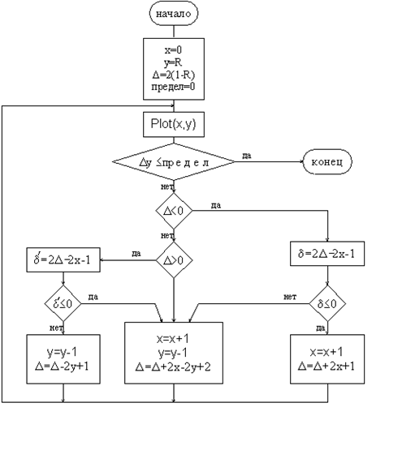
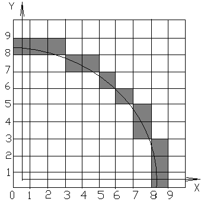

|
Пошаговый алгоритм Брезенхема для генерации окружности в первом квадранте Все используемые в алгоритме переменные целые. Инициализация переменных. xi = 0 yi
= R предел равен нулю. 1. Plot (xi yi) если yi £ предел then 4 Выделение случая 1 или 2 , 4 или 3 , или 5 если Определить случая 1 и 2 . 2. d = 2 если d £ 0 then 10 , если d > 0 then 20 Определение случая 4 или 3 3. d¢ = 2 если d¢ £ 0 then 20 , если d¢ > 0 then 30 Выполнение шагов. шаг mH 10 xi = xi + 1
go to 1 шаг mD 20 xi = xi + 1 y i = yi - 1
go to 1 шаг mV 30 yi = yi - 1
go to 1 4. Finish Переменная предела устанавливается в нуль
для окончания работы алгоритма на горизонтальной оси , в результате
генерируется окружность в пером квадранте. Если необходимо лишь один
из октантов , то второй октант можно получить с помощью установки Предел =
integer (R / y = x. Блок схема алгоритма  Пример (Рис.39).  Рис. 39 Для иллюстрации работы алгоритма генерации окружности рассмотрим окружность радиуса 8 с центром в начале координат Начальные условия. x = 0 y = 8 предел равен нулю. Пошаговое выполнение основного цикла. 1. Plot (0 , 8) yi > предел ® продолжать goto 2 2. d = 2 (-14) + 2 (8) - 1 = -13 < 0 goto 10 10 x = 0 + 1 = 1
goto 1 1 Plot (1 , 8) yi > предел ® продолжать goto 2 2. d = 2 (-11) + 2 (8) - 1 = -7 < 0 goto 10 10 x = 1 + 1 = 2 goto 1 1 Plot (2 , 8) Результаты всех последовательных проходов сведены в таблицу. Список пикселов выработанных алгоритмом, состоит из (0 , 8) (1 , 8) (2 , 8) (3 , 7) (4 , 7) (5 , 6) (6 , 5) (7 , 4) (7 , 3) (8 ,2) (8 , 1) (8 , 0)
Алгоритм обобщается для других квадрантов или дуг окружностей. |
||||||||||||||||||||||||||||||||||||||||||||||||||||||||||||||||||||||||||||||